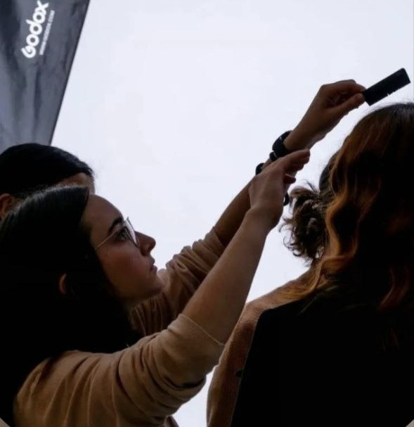
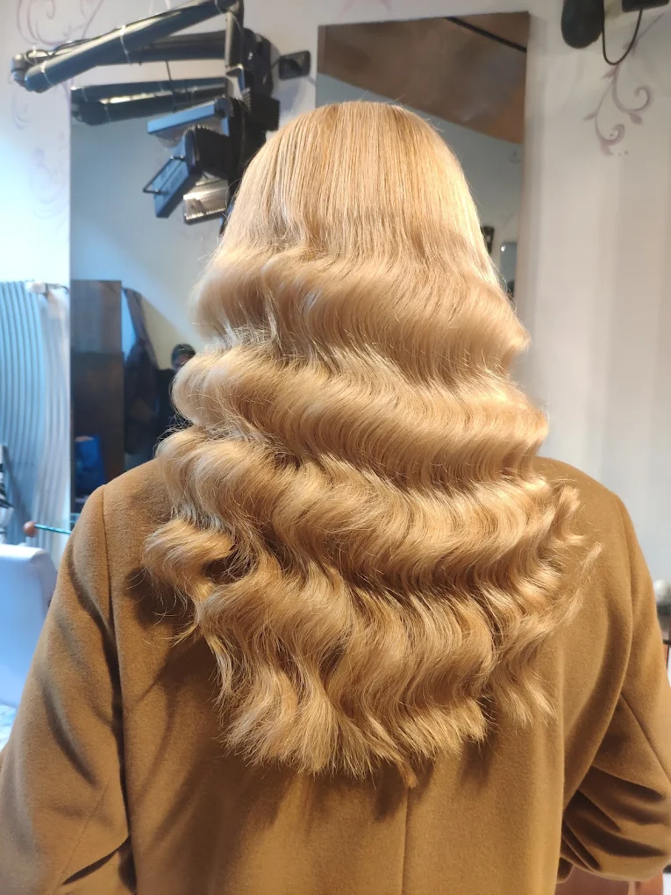
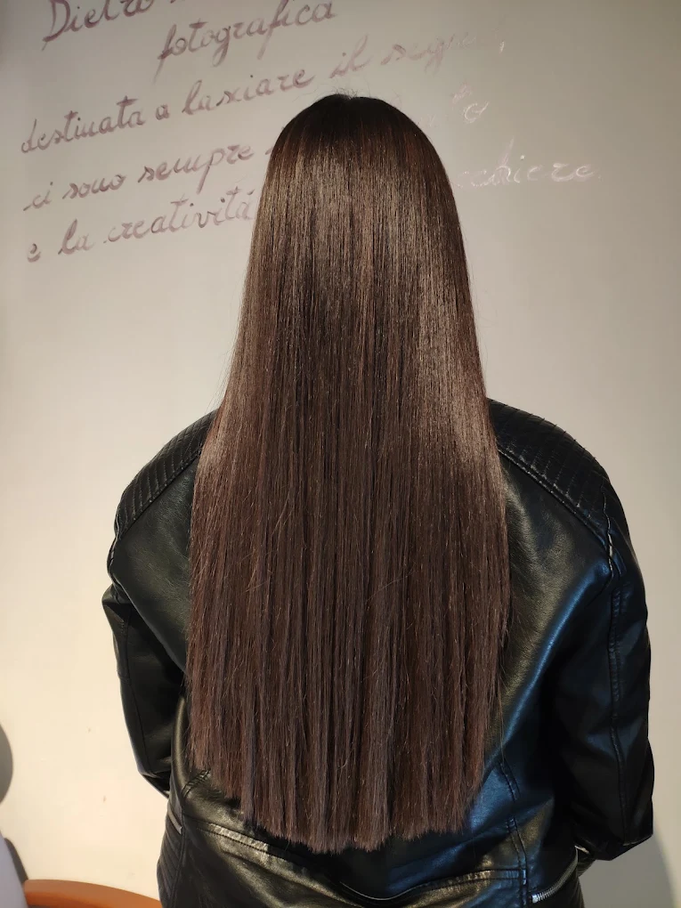
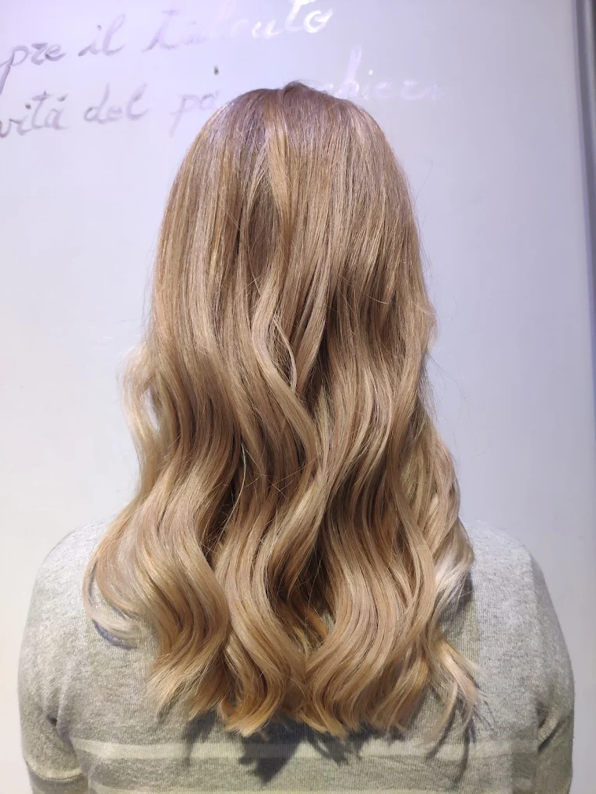
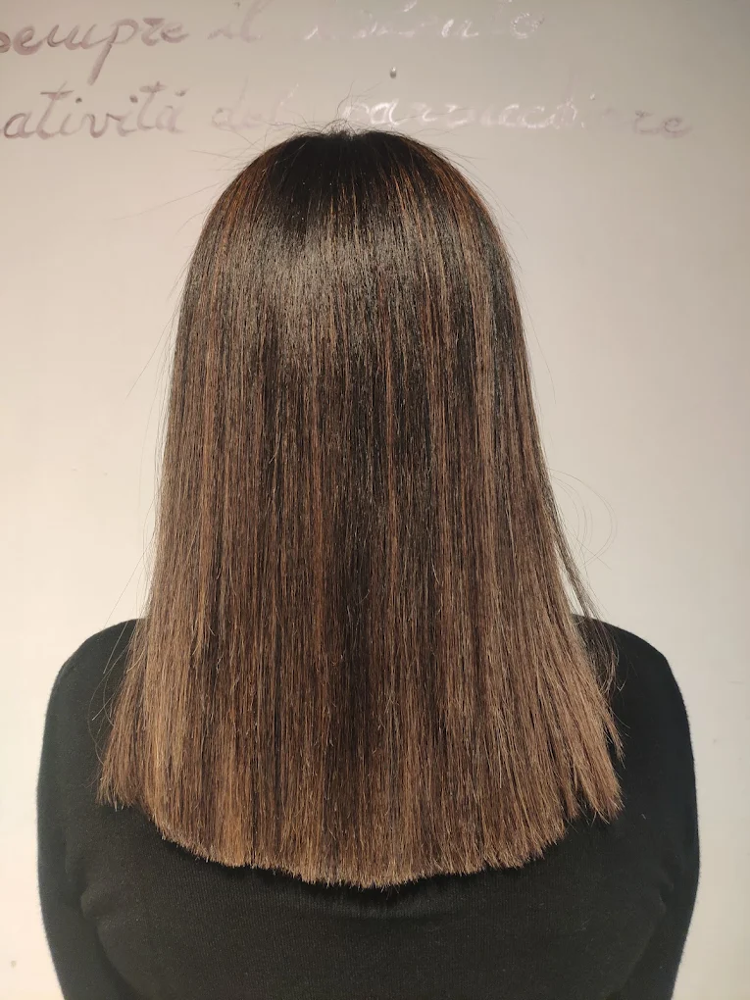

Bruno Mattioli
Ha fondato il salone nel 1990 e fa il parrucchiere da oltre trent'anni. La sua esperienza è la base del lavoro di tutta la squadra.
Taglio, piega, colore e trattamenti per donna e uomo, nel cuore di Milano.
Il Salone Bruno Mattioli accoglie donne e uomini a Milano. Qui trovi un taglio pensato per il tuo viso e per la tua routine, e il tempo per parlarne prima di cominciare.
La nostra attività nasce nel 1990 a Milano, dalla passione e dall'esperienza di Bruno Mattioli, con l'obiettivo di offrire un servizio di qualità dedicato alla cura e alla bellezza dei capelli.
Situato in via Teodosio 56, nel quartiere Casoretto, il nostro salone accoglie donne e uomini, offrendo servizi di taglio, piega, colore, effetti luce e trattamenti specifici, con attenzione alle esigenze e allo stile di ogni cliente.
Nel corso degli anni, abbiamo fatto della cura della persona e dell'attenzione ai dettagli i principi del nostro lavoro. Crediamo che ogni cliente abbia una propria identità da valorizzare e che il giusto stile nasca dall'ascolto, dalla competenza e dalla cura di ogni particolare.
Ancora oggi, il nostro impegno è quello di accompagnare ogni cliente nella scelta del proprio look, offrendo professionalità, attenzione e un servizio pensato per valorizzare la bellezza individuale.
Salone Bruno Mattioli: esperienza, cura e stile, dal 1990.

Ha fondato il salone nel 1990 e fa il parrucchiere da oltre trent'anni. La sua esperienza è la base del lavoro di tutta la squadra.
Diplomata all'Accademia di trucco e parrucco per il cinema, porta in salone una formazione costruita sull'attenzione all'immagine e ai dettagli.




Salone Bruno Mattioli
Via Teodosio, 56
20131 Milano